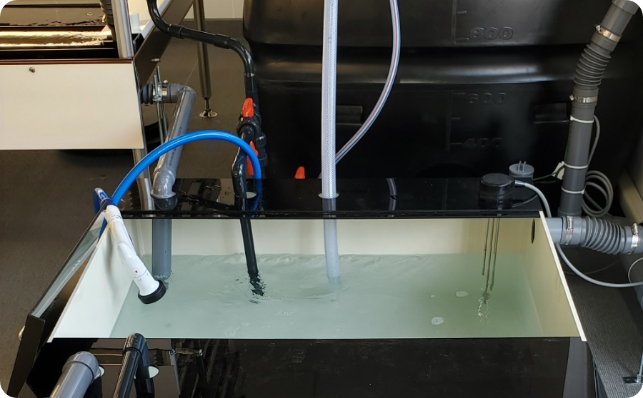

野菜の作り方と装置の話
ノウフク道流野菜の作り方
水耕栽培で野菜を作るのは難しいんじゃないか、野菜作りの経験のない自分たちに出来るだろうか…そんな声をよくいただきます。
ポイントと手順をしっかり守れば初めての方でも、美味しい野菜を作ることが出来ます。
ここからは具体的な野菜作りの工程や方法を見ていきましょう。
野菜生産の4つのプロセス
ノウフク道での野菜生産は大きく分けて４つの行程があります。
液体肥料と人工光などを使って効率的に育てるので各工程までの所要時間が短いことが特徴です。
-
播種
種をまき発芽させて次工程に製品を送り出す工程
7日間
-
 育苗
育苗苗を育てて次工程に製品を送り出す工程
14日間
-
 定植
定植苗をさらに成長させて次工程に送り出す工程
14日間
-
収穫
成長した製品を出荷できる状態にして次工程に送り出す工程
※播種～収穫まで合計35日間が基準
具体的な野菜生産の手順
- 1.栽培に使用する液肥を作る
- 2.ウレタンスポンジを切り離し、そこに作った液肥をしみこませ、種をまく
- 3.一週間くらいして発芽したら、発芽していないものや葉が明らかに小さいものは取り除く
- 4.スポンジから育った苗を取り外し溶液の入った定植プレートに移行させる
- 5.ある程度の大きさになったら、根元からカットして収穫する
- 6.収穫した野菜は梱包資材でつつみ、出荷の準備を行う
- 7.栽培棚や器具やパーツを洗浄する
- 各工程に対して製品の規格(色・形・重量・味・菌数等)を制定
生産可能野菜一覧
ノウフク道で生産できる野菜は、下記のような葉物野菜が中心です。
水耕栽培技術の進歩により、イチゴやミニトマトなども技術的には可能ですが、生産行程や生育に必要な期間は葉物野菜とは異なります。葉物野菜以外の栽培を希望される際は、事前にご相談くださいませ。
美味しい野菜を作るポイント
美味しい野菜を作るために、作業手順や生育状況を管理する基準を設けています。
項目が多岐に渡るので大変そうに感じるかもしれませんが、管理方法もマニュアル化しているので慣れてしまえば簡単です。
| 品質管理項目 | 内容 |
|---|---|
| 歩留り管理 | 各工程での歩留りを制定し、最終製品数を向上させるために行う |
| 規格管理 | 各工程に対して製品の規格(色・形・重量・味・菌数等)を制定 |
| 作業管理 | それぞれの作業を細分化し、作業に対しての注意事項などを明記したマニュアルを作成しそれに対して作業を実施 |
※歩留り：製作数に対しての良品数の割合
| 生産管理項目 | 内容 |
|---|---|
| 工程管理 | 無理のない1日の作業計画を作る(各工程の担当者や・作業実施時間等) |
| 作業管理 | 作業計画がスムーズに実行されているか、トラブル等がないかを確認 |
| 日数管理 | 播種期間7日・育苗期間14日間・定植期間14日間 計35日間で生育 |
| 液肥管理 | 液肥の全液を3ヶ月に1度総入れ替えする(使っていくと液肥内の成分バランスが崩れてしまい、野菜の生育に影響が出ることがある) |
| 環境管理 | LED点灯時間16時間(8時～24時) 栽培室温度年間平均25℃(21～29℃) CO2濃度 LED点灯時800ppm以上(地上界では400ppm前後) |
| 設備管理 | ハード面の清掃点検 装置付属品・エアコン・制御機器・エアシャワーなど |
※生育期間は基本的に延長しない
基本仕様（装置）
小さく始めて大きく育てる！が叶う嬉しい７つのポイント
- 1.天井高が一般的な2,700mmあれば設置可能な省スペース・コンパクト設計
- 2.照明は自社開発による専用LEDを採用
- 3.液肥供給システムと二酸化炭素供給システムを付属
- 4.停電などによる液肥のオーバーフローを想定した安全設計
- 5.一般生菌他の菌管理による衛生管理を実現
- 6.周年計画生産が可能なため安定した生産が可能
- 7.作業が明確なものが多く健常者はもちろん障害者でも作業が容易
-
栽培棚
-
栽培棚・液肥タンク
-
 液肥タンク・循環ポンプ
-
制御盤
-
(1) ライン設備仕様
4ブロック / 4ライン / 循環タンク1台 / 予備タンク1台
-
2) 栽培棚液肥容量 (1ライン)
水槽1段：1290mm×5200mm×25mm
≒168L
水槽6段：168L×5段
≒1000L -
(3) 液肥タンク仕様
循環タンク：1000mm×1000mm×250mm＝250L
予備タンク：既製品1000L -
(4) 総液肥容量
1000L×4台=4000L+250L=4250L
-
(5) 電気量
-
1)LED
- 1段：24本×17W=408W
- 6段：24本×6段=144本×17 W=2448W≒2.5kW
- 4ライン：144本×4ライン＝576本×17W＝9792W≒9.8kW
- 1段：4台×18W＝72W
- 5段(育苗棚無)：4台×5段=20台×18W =360W
- 4ライン：20台×4ライン=80台×18W =1440W＝1.44kW
- 1ライン：1台×245W=245W
- 4ライン：4台×245W=980W≒1.0kW
- 9.8kW+1.44kW+1.0kW=12.24 kW
2) FAN
3) ポンプ
Total
-
補足
液肥循環ﾀﾝｸで作成した液肥をポンプで栽培装置各段に液肥を供給します。
供給したものは各段を流れ終わったのち、再び循環タンクへと戻ってきます。この行為を繰り返して行うと液肥内成分や水分が減少していきますので、液肥ｺﾝﾄﾛｰﾗによって適正数値に調整されていきます。
CO2コントローラによって光合成に必要な二酸化炭素環境を整えています。空調は24時間自動管理している形になります。
全て自動管理されているため人の手が最小限で管理できる
メンテナンス情報
製品メンテナンスは、基本的に日常点検と清掃です。
その他のメンテナンスについては各パーツにより耐久年数は前後します。
何か装置の不具合を感じた際は、お早めにご連絡ください。
日常点検：LEDはついているか・ポンプは稼働しているか等
清掃：水槽内アオコや根の切れ端除去など
| 点検項目 | メンテナンス内容 | 交換時期 |
|---|---|---|
| LED | 照度(一定範囲内にあたる光の粒子数値)/自動点灯消灯確認 | 5～10年 |
| 装置付属品 | 装置内ファン・カバー・反射板・LED取付板等 | 10年以上 |
| ポンプ | 循環量/自動運転確認（水位上限下限） | 5～10年 |
| タンク | ひび割れ漏れなど | 10年以上 |
| 制御盤 | 電線・機器類稼働確認 | 5～10年 |
| CO2関連 | CO2濃度センサー / 電磁弁 / CO2ヒーター付圧力調整器等 | 5～10年 |
【よくある製品トラブル改善方法】
漏電しブレーカーが落ちる→漏電箇所を特定し地元の電気会社に対応
（漏電箇所がわからない場合は、弊社担当が電話で特定のサポートを行います。）